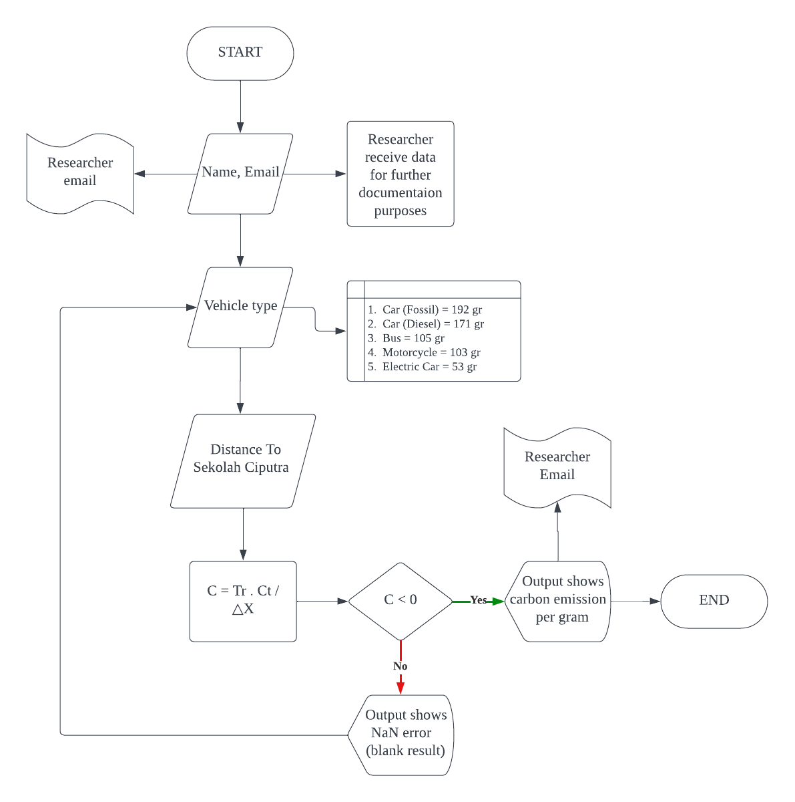

How we do it?
We start by identifying the carbon emission factor involving the vehicle type emission and its average carbon production (to see the reference, see below). Then from the distance input received to Sekolah Ciputra, we can conclude the final amount of carbon emission produced.
eq.1 Vehicle carbon emission equation used in VCEM
C = Carbon emission (g CO2)
Ct = Car type carbon emission
Tr = Tree carbon arbsorption average (65 g CO2)
△x = Distance travelled by user's home to Sekolah Ciputra
The figure shown below is the flowchart diagram used by researcher to calculatre the carbon emission factor, by inserting the values needed, we calculate the input data into our previous equation.
Example
Let's make an example to verify this solution by using car (gas) as vehicle type and travel distance of 5km with the tree carbon factor known previously
Hence, the amount of carbon emissions produced by our previous criteria is 960 g CO2.
Another aspect that I want to incude in the product is the equivalent of trees used to store the carbon emissions that were produced by someone. One mature tree can absorb carbon emissions at 68.5 grams per day (Georgette. K., 2023). Utilizing this as a generalization, the amount of carbon emissions produced beforehand can be devided by tree factor in order to find the quantity of trees needed to store the carbon emissions. Taking the previous solution as an example:
Thus, the trees needed to store 960 grams of carbon emissions are 14 trees.
Reference
Kurniawan, A & Priyantoro, D. D. (2022) Membandingkan Jejak Karbon. Indonesia: Kompas. Kilgore, G. (2023) Carbon Ecological Footprint Calculator. United States: 8 Billion Trees. Morris, S. (n.d) Programming Languages. United States: SkillCrush. Sufiyan, T. (2023) Node.js: A Comprehensive Guide. India: Simple Learn.